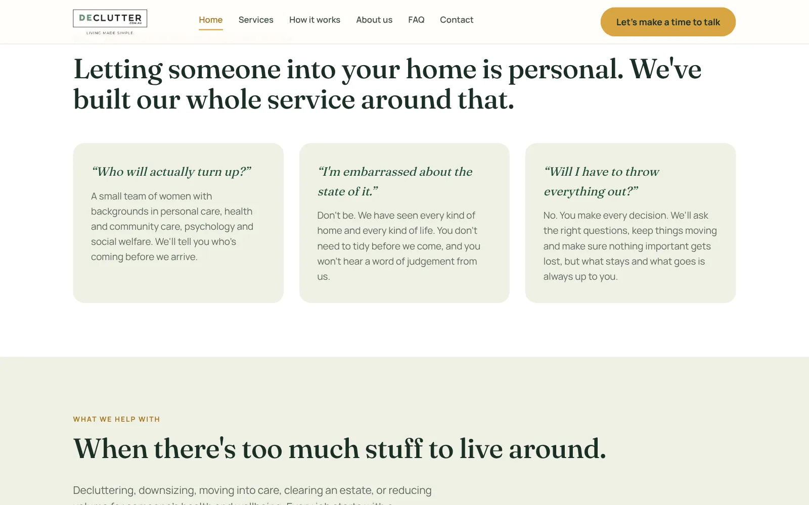
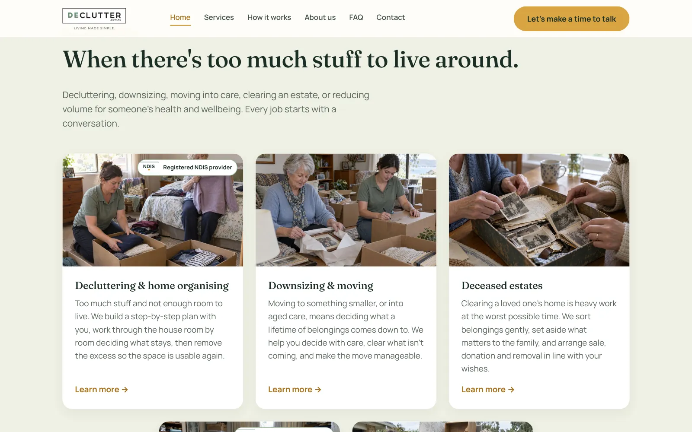
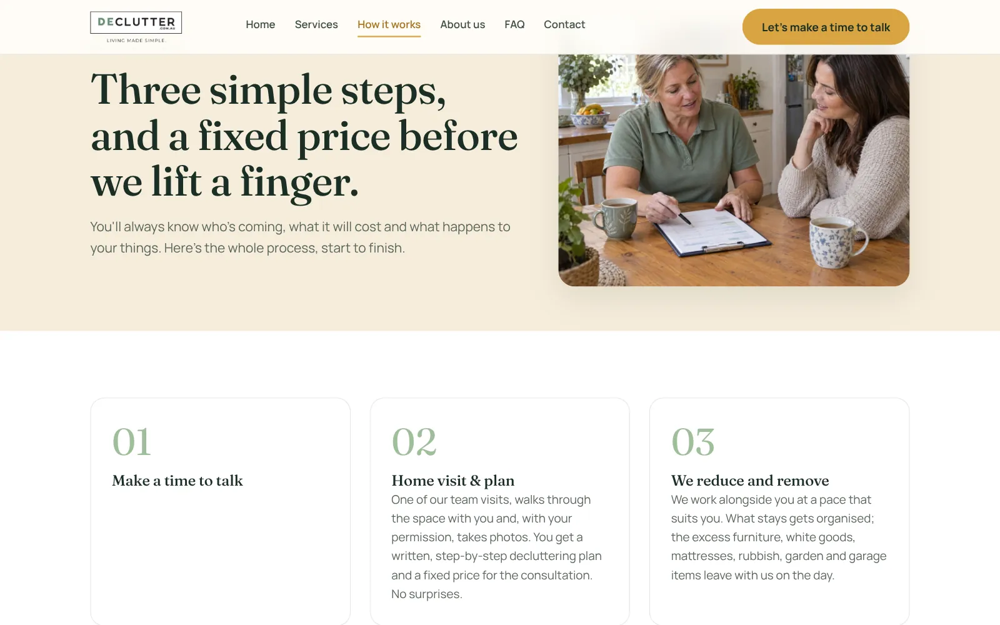
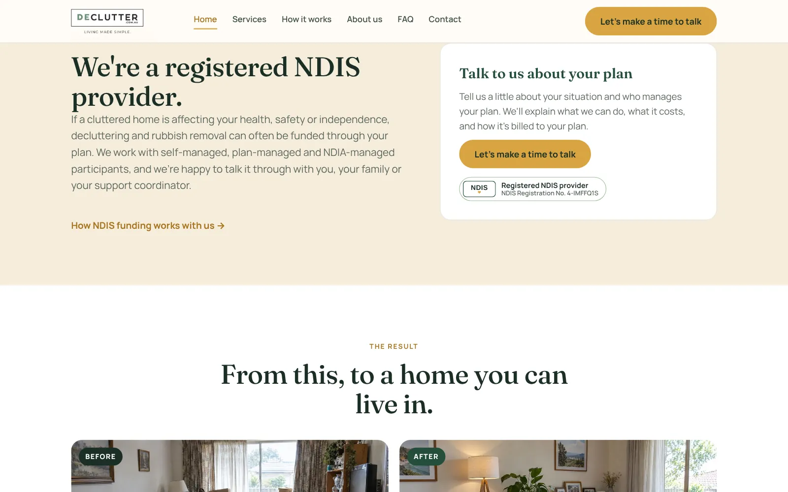
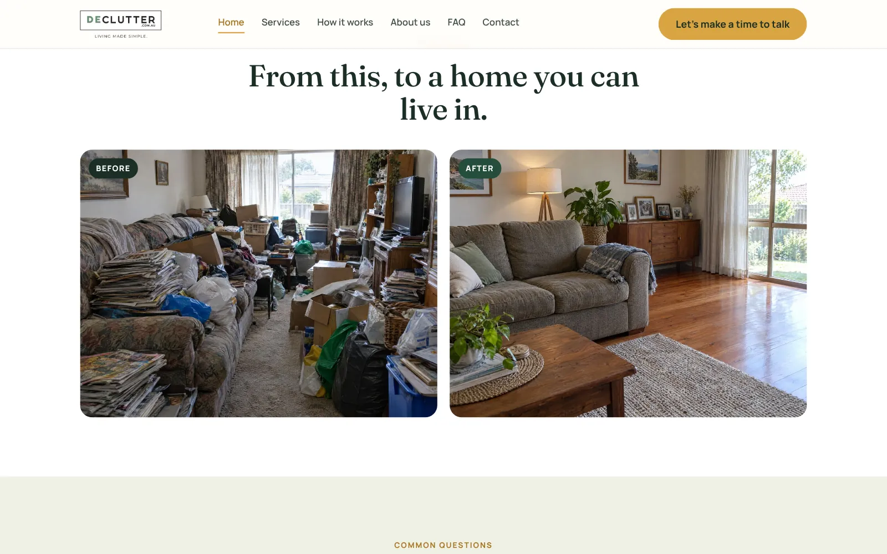
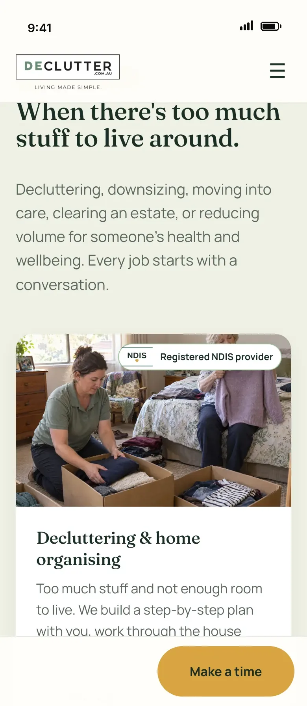
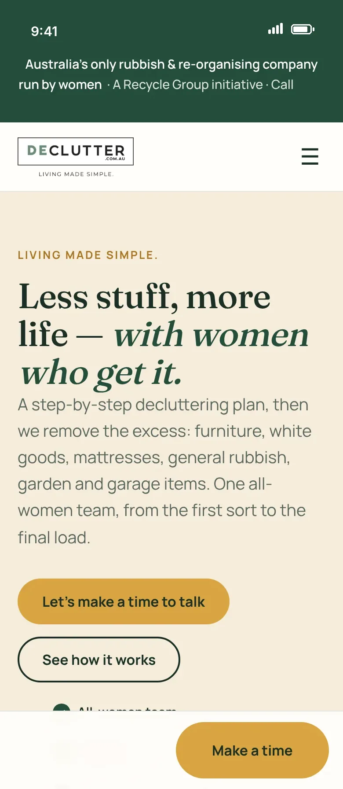
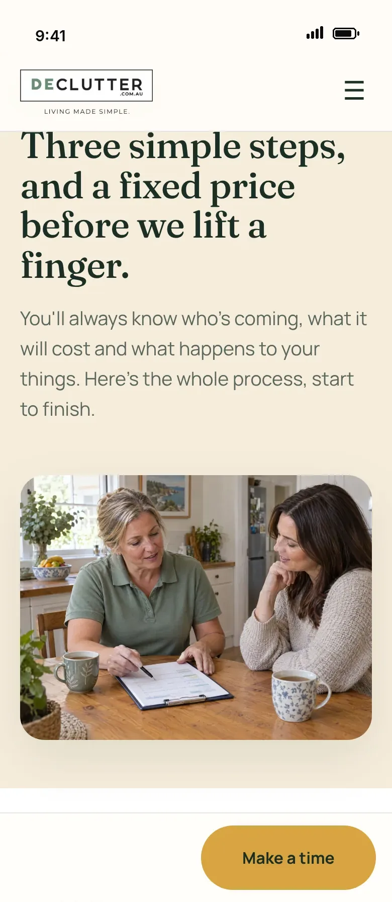

01
Said plainly, up front
The first line says it: an all-women team. Then it answers the real worries before anyone books: who turns up, being judged, and whether everything gets thrown out.

A six-page site in a single file for Declutter.com.au: decluttering, downsizing and rubbish removal, run by women.

Letting someone into your home to sort through your things is personal, and most rubbish removal brands look and sound like trucks and tonnes. The old site also still had placeholder service copy.
A calm, warm site that says up front it’s run by women, explains each service plainly and makes the first step easy.
The first line says it: an all-women team. Then it answers the real worries before anyone books: who turns up, being judged, and whether everything gets thrown out.

Decluttering and organising, downsizing and moving, deceased estates, hoarding and squalor support, and rubbish removal, each with its own page.

Make a time to talk, a home visit and written plan, then reduce and remove. A fixed-price consultation, with clear costs after that.

Registered NDIS provider marks in eight key places, how NDIS funding works in plain words, and landfill as the last resort.






A six-page site in a single file that says it’s run by women from the first line, live on GitHub Pages with no build step.
One HTML file with every page inside it, hash-routed. Hosted on GitHub Pages. Stand-in photos until real team and job shots are ready.

Tell us what’s slowing your business down. We’ll audit your website and ads for free and show you what we’d build or fix, instead of selling you another subscription.